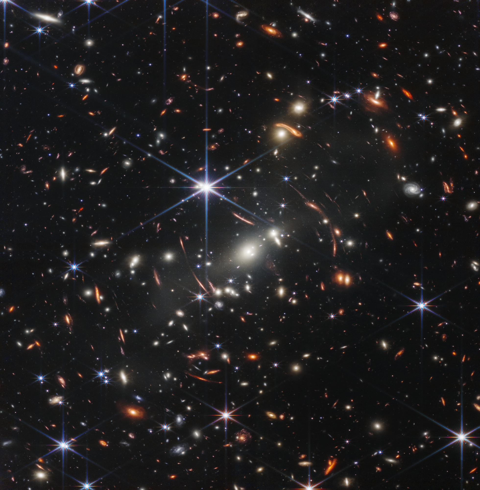

Webb’s First Deep Field
- Mission type
- Space Telescope (infrared astronomy)
- Location
- Orbiting the Sun near the Sun–Earth L2 point, about 1.5 million km from Earth
- Launch / deployment
- Launched December 25, 2021; this image was released in July 2022
- Mission duration
- Observing since 2022; this image took about 12.5 hours of observing time
- Current status
- Active; still observing the distant universe.
Webb’s First Deep Field is one of the deepest and sharpest infrared images of the distant universe. Captured by the James Webb Space Telescope, it reveals thousands of galaxies in a tiny area of the sky. The galaxy cluster SMACS 0723 appears as it looked about 4.6 billion years ago, allowing scientists to explore the distant universe.
Scientific achievements
- Revealed thousands of galaxies in one small patch of sky.
- Used the cluster’s gravity as a “cosmic magnifying glass” (gravitational lensing) to show even more distant galaxies.
- Helps scientists study how galaxies formed and how the universe evolved.
Did you know? The patch of sky in this image is about the size of a grain of sand held at arm’s length.
Read the NASA mission page
Listen to the story